토목기사 (2022-03-05 기출문제)
1과목: 응용역학
1. 그림과 같이 중앙에 집중하중 P를 받는 단순보에서 지점 A로부터 L/4인 지점(점 D)의 처짐각(θD)과 처짐량(δD)? (단, EI는 일정하다.)
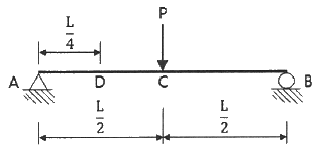
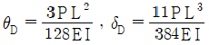
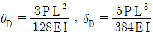
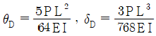
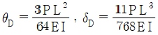
(정답률: 56%)

2. 길이가 4m인 원형단면 기둥의 세장비가 100이 되기 위한 기둥의 지름은? (단，지지상태는 양단 힌지로 가정한다.)
- 20cm
- 18cm
- 16cm
- 12cm
(정답률: 76%)
3. 단면 2차 모멘트가 I이고 길이가 L인 균일한 단면의 직선상(直線狀)의 기둥이 있다. 지지상태가 일단 고정, 타단 자유인 경우 오일러(Euler) 좌굴하중(Pcr)은? (단, 이 기둥의 영(Young)계수는 E이다.)
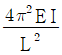
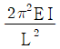
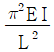
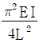
(정답률: 63%)
4. 직사각형 단면 보의 단면적을 A, 전단력을 V라고 할 때 최대 전단응력(τmax)은?
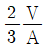
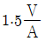
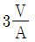
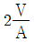
(정답률: 81%)
5. 단면 2차 모멘트의 특성에 대한 설명으로 틀린 것은?
- 단면 2차 모멘트의 최솟값은 도심에 대한 것이며 “0”이다.
- 정삼각형, 정사각형 등과 같이 대칭인 단면의 도심축에 대한 단면 2차 모멘트 값은 모두 같다.
- 단면 2차 모멘트는 좌표축에 상관없이 항상 양(+)의 부호를 갖는다.
- 단면 2차 모멘트가 크면 휨 강성이 크고 구조적으로 안전하다.
(정답률: 58%)
6. 그림과 같은 단순보에서 휨모멘트에 의한 탄성변형에너지는? (단, EI는 일정하다.)
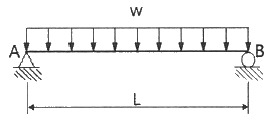
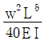
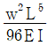
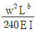
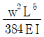
(정답률: 74%)
7. 그림과 같은 모멘트 하중을 받는 단순보에서 B지점의 전단력은?
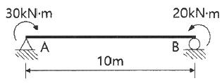
- -1.0 kN
- -10 kN
- -5.0 kN
- -50 kN
(정답률: 56%)
8. 내민보에 그림과 같이 지점 A에 모멘트가 작용하고, 집중하중이 보의 양 끝에 작용한다. 이 보에 발생하는 최대휨모멘트의 절댓값은?
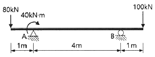
- 60 kN·m
- 80 kN·m
- 100 kN·m
- 120 kN·m
(정답률: 54%)
9. 그림과 같이 양단 내민보에 등분포하중(W)이 1 kN/m가 작용할 때 C점의 전단력은?
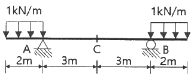
- 0 kN
- 5 kN
- 10 kN
- 15 kN
(정답률: 66%)
10. 그림과 같은 직사각형 보에서 중립축에 대한 단면계수 값은?
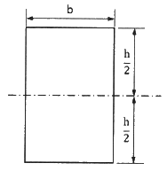
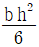
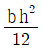
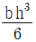
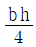
(정답률: 66%)
11. 그림과 같이 캔틸레버 보의 B점에 집중하중 P와 우력모멘트 Mo가 작용할 때 B점에서의 연직범위(δb)는? (단, EI는 일정하다.)
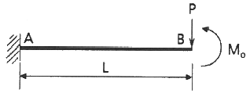
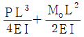
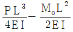
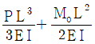
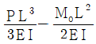
(정답률: 59%)
12. 전단탄성계수(G)가 81000 MPa, 전단응력(τ)이 81 MPa이면 전단변형률(γ)의 값은?
- 0.1
- 0.01
- 0.001
- 0.0001
(정답률: 67%)
13. 그림과 같은 3힌지 아치에서 A점의 수평반력(HA)은?
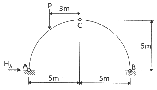
- P
- P/2
- P/4
- P/5
(정답률: 57%)
14. 그림과 같은 라멘 구조물의 E점에서의 불균형모멘트에 대한 부재 EA의 모멘트 분배율은?
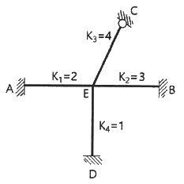
- 0.167
- 0.222
- 0.386
- 0.441
(정답률: 72%)
15. 그림과 같은 지간(span) 8m 인 단순보에 연행하중에 작용할 때 절대최대휨모멘트는 어디에서 생기는가?
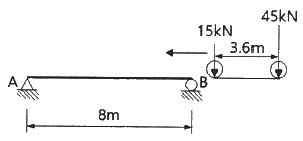
- 45kN의 재하점이 A점으로부터 4m인 곳
- 45kN의 재하점이 A점으로부터 4.45m인 곳
- 15kN의 재하점이 B점으로부터 4m인 곳
- 합력의 재하점이 B점으로부터 3.35m인 곳
(정답률: 65%)
16. 그림과 같은 구조물에서 부재 AB가 받는 힘의 크기는?
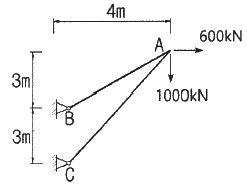
- 3166.7 kN
- 3274.2 kN
- 3368.5 kN
- 3485.4 kN
(정답률: 55%)
17. 그림과 같은 구조에서 절댓값이 최대로 되는 휨모멘트의 값은?
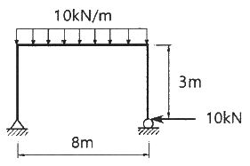
- 80 kN·m
- 50 kN·m
- 40 kN·m
- 30 kN·m
(정답률: 37%)
18. 어떤 금속의 탄성계수(E)가 21×104 MPa이고, 전단 탄성계수(G)가 8×104 MPa일 때, 금속의 푸아송 비는?
- 0.3075
- 0.3125
- 0.3275
- 0.3325
(정답률: 69%)
19. 그림과 같은 단순보의 단면에서 발생하는 최대 전단응력의 크기는?
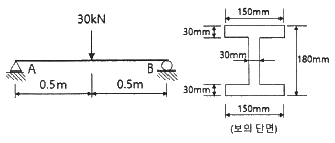
- 3.52 MPa
- 3.86 MPa
- 4.45 MPa
- 4.93 MPa
(정답률: 47%)
20. 그림과 같은 부정정보에서 B점의 반력은?
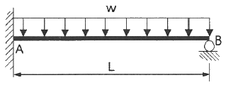
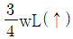
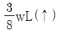
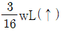
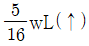
(정답률: 57%)
2과목: 측량학
21. 노선 거리를 2km의 결합 트래버스 측량에서 폐합비를 1/5000로 제한한다면 허용폐합오차는?
- 0.1m
- 0.4m
- 0.8m
- 1.2m
(정답률: 62%)
22. 다음 설명 중 옳지 않은 것은?
- 측지선은 지표상 두 점간의 최단거리선이다.
- 라플라스점은 중력측정을 실시하기 위한 점이다.
- 항정선은 자오선과 항상 일정한 각도를 유지하는 지표의 선이다.
- 지표면의 요철을 무시하고 적도반지름과 극반지름으로 지구의 형상을 나타내는 가상의 타원체를 지구타원체라고 한다.
(정답률: 40%)
23. 그림과 같은 반지름=50m 인 원곡선에서
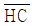
의 거리는? (단, 교각=60°, α=20°, ∠AHC=90°)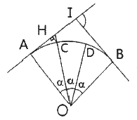
- 0.19m
- 1.98m
- 3.02m
- 3.24m
(정답률: 50%)
24. GNSS 상대측위 방법에 대한 설명으로 옳은 것은?
- 수신기 1대만을 사용하여 측위를 실시한다.
- 위성의 수신기 간의 거리는 전파의 파장 갯수를 이용하여 계산할 수 있다.
- 위상차의 계산은 단순차, 2중차, 3중차와 같은 차분기법으로는 해결하기 어렵다.
- 전파의 위상차를 관측하는 방식이나 절대측위 방법보다 정확도가 떨어진다.
(정답률: 62%)
25. 지형측량에서 등고선의 성질에 대한 설명으로 옳지 않은 것은?
- 등고선의 간격은 경사가 급한 곳에서는 넓어지고, 완만한 곳에는 좁아진다.
- 등고선은 지표의 최대 경사선 방향과 직교한다.
- 동일 등고선 상에 있는 모든 점은 같은 높이이다.
- 등고선간의 최단거리 방향은 그 지표면의 최대경사 방향을 가리킨다.
(정답률: 73%)
26. 지형의 표시법에 대한 설명으로 틀린 것은?
- 영선법은 짧고 거의 평행한 선을 이용하여 경사가 급하면 가늘고 길게, 경사가 완만하면 굵고 짧게 표시하는 방법이다.
- 음영법은 태양광선이 서북쪽에서 45도 각도로 비친다고 가정하고, 지표의 기복에 대하여 그 명암을 2~3색 이상으로 채색하여 기복의 모양을 표시하는 방법이다.
- 채색법은 등고선의 사이를 색으로 채색, 색채의 농도를 변화시켜 표고를 구분하는 방법이다.
- 점고법은 하천, 항만, 해양측량 등에서 수심을 나타날 때 측점에 숫자를 기입하여 수심 등을 나타내는 방법이다.
(정답률: 57%)
27. 동일한 정확도로 3변을 관측한 직육면체의 체적을 계산한 결과가 1200m3 이었다. 거리의 정확도를 1/10000 까지 허용한다면 체적의 허용오차는?
- 0.08 m3
- 0.12 m3
- 0.24 m3
- 0.36 m3
(정답률: 42%)
28. ΔABC의 꼭지점에 대한 좌표값이 (30, 50), (20, 90), (60, 100) 일 때 삼각형 토지의 면적은? (단, 좌표의 단위: m)
- 500 m2
- 750 m2
- 850 m2
- 960 m2
(정답률: 54%)
29. 교각 I=90°, 곡선반지름 R=150m 인 단곡선에서 교점(I.P)의 추가거리가 1139.250m 일 때 곡선종점(E.C)까지의 추가거리는?
- 875.375m
- 989.250m
- 1224.869m
- 1374.825m
(정답률: 40%)
30. 수준측량의 부정오차에 해당되는 것은?
- 기포의 순간 이동에 의한 오차
- 기계의 불완전 조정에 의한 오차
- 지구곡률에 의한 오차
- 표척의 눈금 오차
(정답률: 50%)
31. 어떤 노선을 수준측량하여 작성된 기고식 야장의 일부 중 지반고 값이 틀린 측점은? (단, 단위 : m)
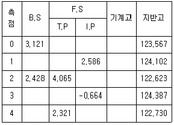
- 측점 1
- 측점 2
- 측점 3
- 측점 4
(정답률: 45%)
32. 노선측량에서 실시설계측량에 해당하지 않는 것은?
- 중심선 설치
- 지형도 작성
- 다각측량
- 용지측량
(정답률: 54%)
33. 트래버스 측량에서 측점 A의 좌표가 (100m, 100m)이고 측선 AB의 길이가 50m일 때 B점의 좌표는? (단, AB측선의 방위각은 195°이다)
- (51.7m, 87.1m)
- (51.7m, 112.9m)
- (148.3m, 87.1m)
- (148.3m, 112.9m)
(정답률: 50%)
34. 수심 H인 하천의 유속측정에서 수면으로부터 깊이 0.2H, 0.4H, 0.6H, 0.8H인 지점의 유속이 각각 0.663m/s, 0.556m/s, 0.532m/s, 0.466m/s 이었다면 3점법에 의한 평균유속은?
- 0.543 m/s
- 0.548 m/s
- 0.559 m/s
- 0.560 m/s
(정답률: 58%)
35. L1과 L2의 두 개 주파수 수신이 가능한 2주파 GNSS수신기에 의하여 제거가 가능한 오차는?
- 위성의 기하학적 위치에 따른 오차
- 다중경로오차
- 수신기 오차
- 전리층오차
(정답률: 41%)
36. 줄자로 거리를 관측할 때 한 구간 20m의 거리에 비례하는 정오차가 +2mm라면 전 구간 200m를 관측하였을 때 정오차는?
- +0.2 mm
- +0.63 mm
- +6.3 mm
- +20 mm
(정답률: 51%)
37. 삼변측량에 대한 설명으로 틀린 것은?
- 전자파거리측량기(EDM)의 출현으로 그 이용이 활성화되었다.
- 관측값의 수에 비해 조건식이 많은 것이 장점이다.
- 코사인 제2법칙과 반각공식을 이용하여 각을 구한다.
- 조정방법에는 조건방정식에 의한 조정과 관측방정식에 의한 조정방법이 있다.
(정답률: 49%)
38. 트래버스 측량의 종류와 그 특징으로 옳지 않은 것은?
- 결합 트래버스는 삼각점과 삼각점을 연결시킨 것으로 조정계산 정확도가 가장 좋다.
- 폐합 트래버스는 한 측점에서 시작하여 다시 그 측점에 돌아오는 관측 형태이다.
- 폐합 트래버스는 오차의 계산 및 조정이 가능 하나, 정확도는 개방 트래버스보다 좋지 못하다.
- 개방 트래버스는 임의의 한 측점에서 시작하여 다른 임의의 한 점에서 끝나는 관측 형태이다.
(정답률: 58%)
39. 수준점 A, B, C에서 P점까지 수준측량을 한 결과가 표와 같다. 관측거리에 대한 경중률을 고려한 P점의 표고는?
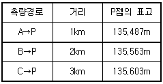
- 135.529 m
- 135.551 m
- 135.563 m
- 135.570 m
(정답률: 59%)
40. 도로노선의 곡률반지름 R=2000m, 곡선길이 L=245m 일 때, 클로소이드의 매개변수 A는?
- 500m
- 600m
- 700m
- 800m
(정답률: 67%)
3과목: 수리학 및 수문학
41. 하폭이 넓은 완경사 개수로 흐름에서 물의 단위중량 W = ρg, 수심 h, 하상경사 S일 때 바닥 전단응력 τ0는? (단, ρ : 물의 밀도, g : 중력가속도)
- ρhS
- ghS
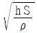
- WhS
(정답률: 50%)
42. 베르누이(Bernoulli)의 정리에 관한 설명으로 틀린 것은?
- 회전류의 경우는 모든 영역에서 성립한다.
- Euler의 운동방정식으로부터 적분하여 유도할 수 있다.
- 베르누이의 정리를 이용하여 Torricelli의 정리를 유도할 수 있다.
- 이상유체 흐름에 대하여 기계적 에너지를 포함한 방정식과 같다.
(정답률: 42%)
43. 삼각 위어(weir)에 월류 수심을 측정할 때 2%의 오차가 있었다면 유량 산정시 발생하는 오차는?
- 2%
- 3%
- 4%
- 5%
(정답률: 54%)
44. 다음 사다리꼴 수로의 윤변은?
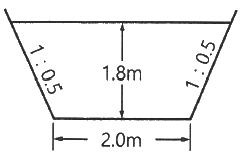
- 8.02m
- 7.02m
- 6.02m
- 9.02m
(정답률: 48%)
45. 흐르는 유체 속의 한 점(x, y, z)의 각 측방향의 속도성분을 (u, v, w)라 하고 밀도를 ρ, 시간을 t로 표시할 때 가장 일반적인 경우의 연속방정식은?
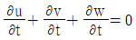
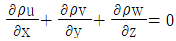
(정답률: 47%)
46. 그림과 같이 수조 A의 물을 펌프에 의해 수조 B로 양수한다. 연결관의 단면적 200cm2, 유량 0.196m3/s, 총손실수두는 속도수두의 3.0배에 해당할 때 펌프의 필요한 동력(HP)은? (단, 펌프의 효율은 98%이며, 물의 단위중량은 9.81 kN/m3, 1HP는 735.75 N∙m/s, 중력가속도는 9.8m/s2)
- 92.5 HP
- 101.6 HP
- 1⑤.9 HP
- 115.2 HP
(정답률: 27%)
47. 수리학적으로 유리한 단면에 관한 설명으로 옳지 않은 것은?
- 주어진 단면에서 윤변이 최소가 되는 단면이다.
- 직사각형 단면일 경우 수심이 폭의 1/2인 단면이다.
- 최대유량의 소통을 가능하게 하는 가장 경제적인 단면이다.
- 사다리꼴 단면일 경우 수심을 반지름으로 하는 반원을 외접원으로 하는 사다리꼴 단면이다.
(정답률: 57%)
48. 여과량의 2m3/s, 동수경사가 0.2, 투수계수가 1cm/s일 때 필요한 여과지 면적은?
- 1000 m2
- 1500 m2
- 2000 m2
- 2500 m2
(정답률: 60%)
49. 비중이 0.9인 목재가 물에 떠 있다. 수면 위에 노출된 체적이 1.0m3 이라면 목재 전체의 체적은? (단, 물의 비중은 1.0 이다.)
- 1.9 m3
- 2.0 m3
- 9.0 m3
- 10.0 m3
(정답률: 55%)
50. 두께가 10m인 피압대수층에서 우물을 통해 양수한 결과, 50m 및 100m 떨어진 두 지점에서 수면강하가 각각 20m 및 10m로 관측되었다. 정상상태를 가정할 때 우물의 양수량은? (단, 투수계수는 0.3m/h)
- 7.6×10-2 m3/s
- 6.0×10-3 m3/s
- 9.4 m3/s
- 21.6 m3/s
(정답률: 42%)
51. 첨두홍수량에 계산에 있어서 합리식의 적용에 관한 설명으로 옳지 않은 것은?
- 하수도 설계 등 소유역에만 적용될 수 있다.
- 우수 도달시간은 강우 지속시간보다 길어야 한다.
- 강우강도는 균일하고 전유역에 고르게 분포되어야 한다.
- 유량이 점차 증가되어 평형상태일 때의 첨두유출량을 나타낸다.
(정답률: 28%)
52. 그림과 같은 모양의 분수(噴水)를 만들었을 때 분수의 높이(HV)는? (단, 유속계수 CV : 0.96, 중력가속도 g : 9.8 m/s2, 다른 손실은 무시한다.)
- 9.00 m
- 9.22 m
- 9.62 m
- 10.00 m
(정답률: 35%)
53. 동수반경에 대한 설명으로 옳지 않은 것은?
- 원형관의 경우, 지름의 1/4 이다.
- 유수단면적을 윤변으로 나눈 값이다.
- 폭이 넓은 직사각형수로의 동수반경은 그 수로의 수심과 거의 같다.
- 동수반경이 큰 수로는 동수반경이 작은 수로보다 마찰에 의한 수두손실이 크다.
(정답률: 46%)
54. 댐의 상류부에서 발생되는 수면 곡선으로 흐름 방향으로 수심이 증가함을 뜻하는 곡선은?
- 배수 곡선
- 저하 곡선
- 유사량 곡선
- 수리특성 곡선
(정답률: 53%)
55. 일반적인 물의 성질로 틀린 것은?
- 물의 비중은 기름의 비중보다 크다.
- 물은 일반적으로 완전유체로 취급한다.
- 해수(海水)도 담수(淡水)와 같은 단위중량으로 취급한다.
- 물의 밀도는 보통 1g/cc = 1000kg/m3 = 1t/m3를 쓴다.
(정답률: 59%)
56. 강우 자료의 일관성을 분석하기 위해 사용하는 방법은?
- 합리식
- DAD 해석법
- 누가 우량 곡선법
- SCS (Soil Conservation Service) 방법
(정답률: 67%)
57. 수문자료 해석에 사용되는 확률분포형의 매개변수를 추정하는 방법이 아닌 것은?
- 모멘트법 (method of moments)
- 회선적분법 (convolution intergral method)
- 최우도법 (method of maximum likelihood)
- 확률가중도모멘트법 (method of probability weighted moments)
(정답률: 48%)
58. 정수역학에 관한 설명으로 틀린 것은?
- 정수 중에는 전단응력이 발생된다.
- 정수 중에는 인장응력이 발생되지 않는다.
- 정수압은 항상 벽면에 직각방향으로 작용한다.
- 정수 중의 한 점에 작용하는 정수압은 모든 방향에서 균일하게 작용한다.
(정답률: 36%)
59. 수심이 1.2m인 수조의 밑바닥에 길이 4.5m, 지름 2cm인 원형관이 연직으로 설치되어 있다. 최초에 물이 배수되기 시작할 때 수조의 밑바닥에서 0.5m 떨어진 연직관 내의 수압은? (단, 물의 단위중량은 9.81 kN/m3이며, 손실은 무시한다.)
- 49.⑤ kN/m2
- -49.⑤ kN/m2
- 39.24 kN/m2
- -39.24 kN/m2
(정답률: 26%)
60. 어느 유역에 1시간 동안 계속되는 강우기록이 아래 표와 같을 때 10분 지속 최대강우강도는?
- 5.1 mm/h
- 7.0 mm/h
- 30.6 mm/h
- 42.0 mm/h
(정답률: 53%)
4과목: 철근콘크리트 및 강구조
61. 단철근 직사각형 보에서 fck = 38 MPa 인 경우, 콘크리트 등가 직사각형 압축응력블록의 깊이를 나타내는 계수 β1은?
- 0.74
- 0.76
- 0.80
- 0.85
(정답률: 55%)
62. 표준갈고리를 갖는 인장 이형철근의 정착에 대한 설명으로 틀린 것은? (단, db는 철근의 공칭지름이다.)
- 갈고리는 압축을 받는 경우 철근정착에 유효하지 않은 것으로 보아야 한다.
- 정착길이는 위혐단면으로부터 갈고리의 외측단부까지 거리로 나타낸다.
- D35 이하 180° 갈고리 철근에서 정착길이 구간을 3db 이하 간격으로 띠철근 또는 스터럽이 정착되는 철근을 수직으로 둘러싼 경우에 보정계수는 0.7이다.
- 기본 정착 길이에 보정계수를 곱하여 정착길이를 계산하는 데 이렇게 구한 정착길이는 항상 8db 이상, 또한 150 mm 이상이어야 한다.
(정답률: 41%)
63. 프리스트레스를 도입할 때 일어나는 손실(즉시손실)의 원인은?
- 콘크리트의 크리프
- 콘크리트의 건조수축
- 긴장재 응력의 릴랙세이션
- 포스트텐션 긴장재와 덕트 사이의 마찰
(정답률: 51%)
64. 콘크리트 설계기준압축강도가 28 MPa, 철근의 설계기준항복강도가 400 MPa로 설계된 길이가 7m인 양단 연속보에서 처짐을 계산하지 않는 경우 보의 최소 두께는? (단, 보통중량콘크리트(mc = 2300 kg/m3) 이다.)
- 275 mm
- 334 mm
- 379 mm
- 438 mm
(정답률: 47%)
65. 철근콘크리트의 강도설계법을 적용하기 위한 설계 가정으로 틀린 것은?
- 철근과 콘크리트의 변형률은 중립축부터 거리에 비례한다.
- 인장 측 연단에서 철근의 극한변형률은 0.003으로 가정한다.
- 콘크리트 압축연단의 극한변형률은 콘크리트의 설계기준압축강도가 40 MPa이하인 경우에는 0.0033으로 가정한다.
- 철근의 응력이 설계기준항복강도(fy) 이하일 때 철근의 응력은 그 변형률에 철근의 탄성계수(Es)를 곱한 값으로 한다.
(정답률: 44%)
66. 강도설계법에서 구조의 안전을 확보하기 위해 사용되는 강도감소계수(ø) 값으로 틀린 것은?
- 인장지배 단면 : 0.85
- 포스트텐션 정착구역 : 0.70
- 전단력과 비틀림모멘트를 받는 부재 : 0.75
- 압축지배 단면 중 띠철근으로 보강된 철근콘크리트 부재 : 0.65
(정답률: 63%)
67. 연속보 또는 1방향 슬래브의 휨모멘트와 전단력을 구하기 위해 근사해법을 적용할 수 있다. 근사해법을 적용하기 위해 만족하여야 하는 조건으로 틀린 것은?
- 등분포 하중이 작용하는 경우
- 부재의 단면 크기가 일정한 경우
- 활하중이 고정하중의 3배를 초과하는 경우
- 인접 2경간의 차이가 짧은 경간의 20% 이하인 경우
(정답률: 24%)
68. 순간 처짐이 20mm 발생한 캔틸레버 보에서 5년 이상의 지속하중에 의한 총 처짐은? (단, 보의 인장 철근비는 0.02, 받침부의 압축철근비는 0.01이다.)
- 26.7 mm
- 36.7 mm
- 46.7 mm
- 56.7 mm
(정답률: 51%)
69. 그림과 같은 단면을 갖는 지간 20m의 PSC보에 PS강재가 200mm의 편심거리를 가지고 직선배치 되어 있다. 자중을 포함한 계수등분포하중 16kN/m가 보에 작용할 때 보 중앙단면의 콘크리트 상연응력은? (단, 유효 프리스트레스 힘(Pe)은 2400kN 이다.)
- 6 MPa
- 9 MPa
- 12 MPa
- 15 MPa
(정답률: 32%)
70. 그림과 같은 맞대기 용접의 이음부에 발생하는 용력의 크기는? (단, P=360kN, 강판두께=12mm)
- 압축응력 fc = 14.4 MPa
- 인장응력 ft = 3000 MPa
- 전단응력 τ = 150 MPa
- 압축응력 fc = 120 MPa
(정답률: 60%)
71. 유효깊이가 600mm인 단철근 직사각형 보에서 균형 단면이 되기 위한 압축연단에서 중립축까지의 거리는? (단, fck = 28 MPa, fy = 300 MPa, 강도설계법에 의한다.)
- 494.5 mm
- 412.5 mm
- 390.5 mm
- 293.5 mm
(정답률: 34%)
72. 보의 길이가 20m, 활동량이 4mm, 긴장재의 탄성계수(EP)가 200,000 MPa 일 때 프리스트레스의 감소량(Δfan)은? (단, 일단 정착이다.)
- 40 MPa
- 30 MPa
- 20 MPa
- 15 MPa
(정답률: 37%)
73. 그림과 같은 띠철근 기둥에서 띠철근의 최대 수직간격은? (단, D10의 공칭직경은 9.5mm, D32의 공칭직경은 31.8mm 이다.)
- 400 mm
- 456 mm
- 500 mm
- 509 mm
(정답률: 57%)
74. 강판을 리벳(Rivet)이음할 때 지그재그로 리벳을 체결한 모재의 순폭은 총폭으로부터 고려하는 단면의 최초의 리벳 구멍에 대하여 그 지름을 공제하고 이하 순차적으로 다음 식을 각 리벳 구멍으로 공제하는데 이때의 식은? (단, g : 리벳 선간의 거리, d : 리벳 구멍의 지름, p : 리벳 피치)
(정답률: 50%)
75. 비틀림철근에 대한 설명으로 틀린 것은? (단, Aoh는 가장 바깥의 비틀림 보강철근의 중심으로 닫혀진 단면적(mm2)이고, ph는 가장 바깥의 횡방향 폐쇄스터럽 중심선의 둘레(mm)이다.)
- 횡방향 비틀림철근은 종방향 철근 주위로 135° 표준갈고리에 의해 정착하여야 한다.
- 비틀림모멘트를 받는 속빈 단면에서 횡방향 비틀림철근의 중신선부터 내부 벽면까지의 거리는 0.5 Aoh/ph 이상이 되도록 설계하여야 한다.
- 횡방향 비틀림철근의 간격은 ph/6 보다 작아야 하고, 또한 400 mm보다 작아야 한다.
- 종방향 비틀림철근은 양단에 정착하여야 한다.
(정답률: 53%)
76. 뒷부벽식 용벽에서 뒷부벽을 어떤 보로 설계하여야 하는가?
- T형보
- 단순보
- 연속보
- 직사각형보
(정답률: 61%)
77. 직사각형 단면의 보에서 계수전단력 Vu = 40 kN 을 콘크리트만으로 지지하고자 할 때 필요한 최소 유효깊이(d)는? (단, 보통중량콘크리트이며, fck = 25 MPa, bw = 300mm)
- 320 mm
- 348 mm
- 384 mm
- 427 mm
(정답률: 35%)
78. 슬래브와 보가 일체로 타설된 비대칭 T형보(반 T형보)의 유효폭은? (단, 플랜지 두께 = 100mm, 복부 폭 = 300mm, 인접보와의 내측 거리 = 1600mm, 보의 경간 = 6.0m)
- 800 mm
- 900 mm
- 1000 mm
- 1100 mm
(정답률: 44%)
79. 그림과 같은 인장철근을 갖는 보의 유효깊이는? (단, D19철근의 공칭단면적은 287 mm2 이다.)
- 350 mm
- 410 mm
- 440 mm
- 500 mm
(정답률: 48%)
80. 인장응력 검토를 위한 L-150×90×12인 형강(angle)의 전개한 총 폭(bg)은?
- 228 mm
- 232 mm
- 240 mm
- 252 mm
(정답률: 56%)
5과목: 토질 및 기초
81. 두께 9m의 점토층에서 하중강도 P1 일 때 간극비는 2.0 이고 하중강도를 P2로 증가시키면 간극비는 1.8로 감소되었다. 이 점토층의 최종 압밀 침하량은?
- 20 cm
- 30 cm
- 50 cm
- 60 cm
(정답률: 22%)
82. 지반개량공법 중 주로 모래질 지반을 개량하는데 사용되는 공법은?
- 프리로딩 공법
- 생석회 말뚝 공법
- 페이퍼 드레인 공법
- 바이브로 플로테이션 공법
(정답률: 51%)
83. 포화된 점토에 대하여 비압밀비배수(UU)시험을 하였을 때 결과에 대한 설명으로 옳은 것은? (단, ø : 내부마찰각, c : 점착력)
- ø와 c가 나타나지 않는다.
- ø와 c가 모두 “0”이 아니다.
- ø는 “0”이 아니지만 c는 “0”이다.
- ø는 “0”이고 c는 “0”이 아니다.
(정답률: 50%)
84. 점토지반으로부터 불교란 시료를 채취하였다. 이 시료의 지름이 50mm, 길이가 100mm, 습윤 질량이 350g, 함수비가 40%일 때 이 시료의 건조밀도는?
- 1.78 g/cm3
- 1.43 g/cm3
- 1.27 g/cm3
- 1.14 g/cm3
(정답률: 39%)
85. 말뚝이 부주면마찰력에 대한 설명으로 틀린 것은?
- 연약한 지반에서 주로 발생한다.
- 말뚝 주변의 지반이 말뚝보다 더 침하될 때 발생한다.
- 말뚝주면에 역청 코팅을 하면 부주면마찰력을 감소시킬 수 있다.
- 부주면마찰력의 크기는 말뚝과 흙 사이의 상대적인 변위속도와는 큰 연관성이 없다.
(정답률: 50%)
86. 말뚝기초에 대한 설명으로 틀린 것은?
- 군항은 전달되는 응력이 겹쳐지므로 말뚝 1개의 지지력에 말뚝 개수를 곱한 값보다 지지력이 크다.
- 동역학적 지지력 공식 중 엔지니어링 뉴스 공식의 안전율(Fs)은 6 이다.
- 부주면마찰력이 발생하면 말뚝의 지지력은 감소한다.
- 말뚝기초는 기초의 분류에서 깊은 기초에 속한다.
(정답률: 35%)
87. 그림과 같이 폭이 2m, 길이가 3m인 기초에 100 kN/m2의 등분포 하중이 작용할 때, A점 아래 4m 깊이에서의 연직응력 증가량은? (단, 아래 표의 영향계수 값을 활용하여 구하며, m=B/z, n=L/z 이고, B는 직사각형 단면의 폭, L은 직사각형 단면의 길이, z는 토층의 깊이이다.)
- 6.7 kN/cm2
- 7.4 kN/cm2
- 12.2 kN/cm2
- 17.0 kN/cm2
(정답률: 32%)
88. 기초가 갖추어야 할 조건이 아닌 것은?
- 동결, 세굴 등에 안전하도록 최소한의 근입깊이를 가져야 한다.
- 기초의 시공이 가능하고 침하량이 허용치를 넘지 않아야 한다.
- 상부로부터 오는 하중을 안전하게 지지하고 기초지반에 전달하여야 한다.
- 미관상 아름답고 주변에서 쉽게 구득할 수 있는 재료로 설계되어야 한다.
(정답률: 61%)
89. 평판재하시험에 대한 설명으로 틀린 것은?
- 순수한 점토지반의 지지력은 재하판 크기와 관계 없다.
- 순수한 모래지반의 지지력은 재하판의 폭에 비례한다.
- 순수한 점토지반의 침하량은 재하판의 폭에 비례한다.
- 순수한 모래지반의 침하량은 재하판의 폭에 관계없다.
(정답률: 40%)
90. 두께 2cm의 점토시료에 대한 압밀 시험결과 50%의 압밀을 일으키는데 6분이 걸렸다. 같읕 조건하에서 두께 3.6m의 점토층 위에 축조한 구조물이 50%의 압밀에 도달하는데 며칠이 걸리는가?
- 1350일
- 270일
- 135일
- 27일
(정답률: 48%)
91. 비교적 가는 모래와 실트가 물속에서 침강하여 고리 모양을 이루며 작은 아치를 형성한 구조로 단립구조보다 간극비가 크고 충격과 진동에 약한 흙의 구조는?
- 봉소구조
- 낱알구조
- 분산구조
- 면모구조
(정답률: 37%)
92. 아래의 그림과 같은 흙의 구성도에서 체적 V를 1로 했을 때의 간극의 체적은? (단, 간극률은 n, 함수비는 w, 흙입자의 비중은 Gs, 물의 단위중량은 γw)
- n
- wGs
- γw(1-n)
- [Gs - n(Gs-1)]γw
(정답률: 46%)
93. 유선망의 특징에 대한 설명으로 틀린 것은?
- 각 유로의 침투수량은 같다.
- 동수경사는 유선망의 폭에 비례한다.
- 인접한 두 등수두선 사이의 수두손실은 같다.
- 유선망을 이루는 사변형은 이론상 정사각형이다.
(정답률: 48%)
94. 벽체에 작용하는 주동토압을 Pa, 수동토압을 Pp, 정지토압을 Po라 할 때 크기의 비교로 옳은 것은?
- Pa ＞ Pp ＞ Po
- Pp ＞ Po ＞ Pa
- Pp ＞ Pa ＞ Po
- Po ＞ Pa ＞ Pp
(정답률: 60%)
95. 그림과 같이 3개의 지층으로 이루어진 지반에서 토층에 수직한 방향의 평균 투수계수(kv)는?
- 2.516×10-6 cm/s
- 1.274×10-5 cm/s
- 1.393×10-4 cm/s
- 2.0×10-2 cm/s
(정답률: 44%)
96. 응력경로(stress path)에 대한 설명으로 틀린 것은?
- 응력경로는 특성상 전응력으로만 나타낼 수 있다.
- 응력경로란 시료가 받는 응력의 변화과정을 응력공간에 궤적으로 나타낸 것이다.
- 응력경로는 Mohr의 응력원에서 전단응력이 최대의 점을 연결하여 구한다.
- 시료가 받는 응력상태에 대한 응력경로는 직선 또는 곡선으로 나타난다.
(정답률: 48%)
97. 암반층 위에 5m 두께의 토층이 경사 15°의 자연사면으로 되어 있다. 이 토층의 강도정수 c = 15 kN/m2, ø = 30° 이며, 포화단위중량(γsat)은 18 kN/m3 이다. 지하수면의 토층의 지표면과 일치하고 침투는 경사면과 대략 평행이다. 이때 사면의 안전율은? (단, 물의 단위중량은 9.81 kN/m3 이다.)
- 0.85
- 1.15
- 1.65
- 2.⑤
(정답률: 32%)
98. 모래시료에 대해서 압밀배수 삼축압축시험을 실시하였다. 초기 단계에서 구속응력(σ3)은 100 kN/m2 이고, 전단파괴시에 작용된 축차응력(σdf)은 200 kN/m2 이었다. 이와 같은 모래시료의 내부마찰각(ø) 및 파괴면에 작용하는 전단응력(τf)의 크기는?
- ø = 30°, τf = 115.47 kN/m2
- ø = 40°, τf = 115.47 kN/m2
- ø = 30°, τf = 86.60 kN/m2
- ø = 40°, τf = 86.60 kN/m2
(정답률: 38%)
99. 흙의 다짐시험에서 다짐에너지를 증가시킬 때 일어나는 결과는?
- 최적함수비는 증가하고, 최대건조단위중량은 감소한다.
- 최적함수비는 감소하고, 최대건조단위중량은 증가한다.
- 최적함수비와 최대건조단위중량이 모두 감소한다.
- 최적함수비와 최대건조단위중량이 모두 증가한다.
(정답률: 52%)
100. 토립자가 둥글고 입도분포가 나쁜 모래지반에서 표준관입시험을 한 결과 N값은 10이었다. 이 모래의 내부 마찰각(ø)을 Dumham의 공식으로 구하면?
- 21°
- 26°
- 31°
- 36°
(정답률: 47%)
6과목: 상하수도공학
101. 상수도의 정수공정에서 염소소독에 대한 설명으로 틀린 것은?
- 염소살균은 오존살균에 비해 가격이 저렴하다.
- 염소소독의 부산물로 생성되는 THM은 발암성이 있다.
- 암모니아성질소가 많은 경우에는 클로라민이 형성된다.
- 염소요구량은 주입염소량과 유리 및 결합잔류염소량의 합이다.
(정답률: 33%)
102. 집수매거(infiltration galleries)에 관한 설명으로 옳지 않은 것은?
- 철근콘크리트조의 유공관 또는 권선형 스크린관을 표준으로 한다.
- 집수매거 내의 평균유속은 유출단에서 1m/s 이하가 되도록 한다.
- 집수매거의 부설방향은 표류수의 상황을 정확하게 파악하여 위수할 수 있도록 한다.
- 집수매거는 하천부지의 하상 밑이나 구하천 부지 등의 땅속에 매설하여 복류수나 자유수면을 갖는 지하수를 취수하는 시설이다.
(정답률: 20%)
103. 수평으로 부설한 지름 400mm, 길이 1500m의 주철판으로 20000 m3/day 물이 수송될 때 펌프에 의한 송수압이 53.95 N/cm2 이면 관수로 끝에서 발생되는 압력은? (단, 관의 마찰손실계수 f=0.03, 물의 단위중량 γ = 9.81 kN/m3, 중력가속도 g=9.8m/s2)
- 3.5×105 N/m2
- 4.5×105 N/m2
- 5.0×105 N/m2
- 5.5×105 N/m2
(정답률: 17%)
104. 하수처리시설의 2차 침전지에 대한 내용으로 틀린 것은?
- 유효수심은 2.5~4m를 표준으로 한다.
- 침전지 수면의 여유고는 40~60cm 정도로 한다.
- 직사각형인 경우 길이와 폭의 비는 3 : 1 이상으로 한다.
- 표면부하율은 계획1일 최대오수량에 대하여 25~40 m3/m2·day 로 한다.
(정답률: 28%)
1⑤. “A”시의 2021년 인구는 588000명이며 연간 약 3.5%씩 증가하고 있다. 2027년도를 목표로 급수시설의 설계에 임하고자 한다. 1일 1인 평균급수량은 250L이고 급수율은 70%로 가정할 때 계획1일평균급수량은? (단, 인구추정식은 등비증가법으로 산정한다.)
- 약 126500 m3/day
- 약 129000 m3/day
- 약 258000 m3/day
- 약 387000 m3/day
(정답률: 46%)
106. 운전 중인 펌프의 토출량을 조절할 때 공동현상을 일으킬 우려가 있는 것은?
- 펌프의 회전수를 조절한다.
- 펌프의 운전대수를 조절한다.
- 펌프의 흡입측 밸브를 조절한다.
- 펌프의 토츨측 밸브를 조절한다.
(정답률: 34%)
107. 원수수질 상황과 정수수질 관리목표를 중심으로 정수방법을 선정할 때 종합적으로 검토하여야 할 사항으로 틀린 것은?
- 원수수질
- 원수시설의 규모
- 정수시설의 규모
- 정수수질의 관리목표
(정답률: 46%)
108. 하수도의 계획오수량 산정 시 고려할 사항이 아닌 것은?
- 계획오수량 산정 시 산업폐수량을 포함하지 않는다.
- 오수관로는 계획시간최대오수량을 기준으로 계획한다.
- 합류식에서 하수의 차집관로는 우천 시 계획오수량을 기준으로 계획한다.
- 우천 시 계획오수량 산정 시 생활오수량 외 우천 시 오수관로에 유입되는 빗물의 양과 지하수의 침입량을 추정하여 합산한다.
(정답률: 46%)
109. 주요 관로별 계획하수량으로서 틀린 것은?
- 오수관로 : 계획시간최대오수량
- 차집관로 : 우천 시 계획오수량
- 오수관로 : 계획우수량 + 계획오수량
- 합류식 관로 : 계획시간최대오수량 + 계획우수량
(정답률: 51%)
110. 하수도시설에서 펌프의 선정기준 중 틀린 것은?
- 전양정이 5m 이하이고 구경이 400mm 이상인 경우는 축류펌프를 선정한다.
- 전양정이 4m 이상이고 구경이 80mm 이상인 경우는 원심펌프를 선정한다.
- 전양정이 5~20m 이고 구경이 300mm 이상인 경우 원심사류펌프를 선정한다.
- 전양정이 3~12m 이고 구경이 400mm 이상인 경우는 원심펌프를 선정한다.
(정답률: 32%)
111. 아래 펌프의 표준특성 곡선에서 양정을 나타내는 것은? (단, Ns : 100~250)
- A
- B
- C
- D
(정답률: 48%)
112. 양수량이 15.5m3/min 이고 전양정이 24m일 때, 펌프의 축동력은? (단, 펌프의 효율은 80%로 가정한다.)
- 4.65 kW
- 7.58 kW
- 46.57 kW
- 75.95 kW
(정답률: 34%)
113. 맨홀 설치 시 관경에 따라 맨홀의 최대 간격에 차이가 있다. 관로 직선부에서 관경 600mm 초과 1000mm 이하에서 맨홀의 최대 간격 표준은?
- 60 m
- 75 m
- 90 m
- 100 m
(정답률: 46%)
114. 수원의 구비요건으로 틀린 것은?
- 수질이 좋아야 한다.
- 수량이 풍부하여야 한다.
- 가능한 한 낮은 곳에 위치하여야 한다.
- 가능한 한 수돗물 소비지에서 가까운 곳에 위치하여야 한다.
(정답률: 60%)
115. 다음 중 저농도 현탁입자의 침전형태는?
- 단독침전
- 응집침전
- 지역침전
- 압밀침전
(정답률: 30%)
116. 계획우수량 산정 시 유입시간을 산정하는 일반적인 Kervby 식과 스에이시 식에서 각 계수와 유입시간의 관계로 틀린 것은?
- 유입시간과 지표면거리는 비례 관계이다.
- 유입시간과 지체계수는 반비례 관계이다.
- 유입시간과 설계강우강도는 반비례 관계이다.
- 유입시간과 지표면 평균경사는 반비례 관계이다.
(정답률: 34%)
117. 자연유하방식과 비교할 때 압송식 하수도에 관한 특징으로 틀린 것은?
- 불명수(지하수 등)의 침입이 없다.
- 하향식 경사를 필요로 하지 않는다.
- 관로의 매설깊이를 낮게 할 수 있다.
- 유지관리가 비교적 간편하고 관로 점검이 용이하다.
(정답률: 37%)
118. 염소 소독 시 생성되는 염소성분 중 살균력이 가장 강한 것은?
- OCl-
- HOCl
- NHCl2
- NH2Cl
(정답률: 51%)
119. 석회를 사용하여 하수를 응집 침전하고자 할 경우의 내용으로 틀린 것은?
- 콜로이드성 부유물질의 침전성이 향상된다.
- 알칼리도, 인산염, 마그네슘 등과도 결합하여 제거 시킨다.
- 석화첨가에 의한 인 제거는 황산반토보다 슬러지 발생량이 일반적으로 적다.
- 알칼리제를 응집보조제로 첨가하여 응집침전의 효과가 향상되도록 pH를 조정한다.
(정답률: 30%)
120. 정수처리의 단위 조작으로 사용되는 오존처리에 관한 설명으로 틀린 것은?
- 유기물질의 생분해성을 증가시킨다.
- 염수주입에 앞서 오존을 주입하면 염소의 소비량을 감소시킨다.
- 오존은 자체의 높은 산화력으로 염소에 비하여 높은 살균력을 가지고 있다.
- 인의 제거능력이 뛰어나고 수온이 높아져도 오존 소비량은 일정하게 유지된다.
(정답률: 46%)
처짐각(θD) = P(L/4)^2/(2EI)
처짐량(δD) = P(L/4)^3/(3EI)
따라서 정답은 ""이다.